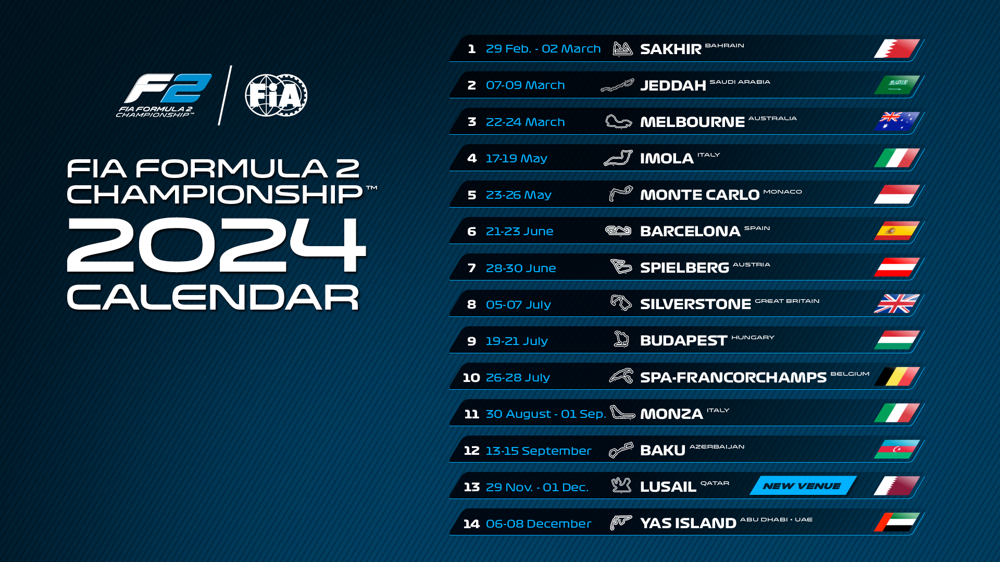

Calendario FIA Formula 2
05 de maio de 2024
Reprodução: FIA Formula 2 / FIA
A Fórmula 2 é uma categoria de automobilismo de monopostos reconhecida como uma das principais
etapas
de desenvolvimento de jovens talentos rumo à Fórmula 1. Ela serve como uma plataforma de transição
entre as categorias de base e a Fórmula 1, oferecendo aos pilotos a oportunidade de competir em
carros de alto desempenho e ganhar experiência em corridas de alto nível.
Em relação ao número de corridas, a Fórmula 2 geralmente tem menos corridas que a Fórmula 1 devido a
diferenças na estrutura dos campeonatos e nos recursos disponíveis. Enquanto a Fórmula 1 é um
campeonato mundial com um calendário extenso de corridas realizadas em diferentes países ao longo de
uma temporada, a Fórmula 2 tende a ter um calendário mais compacto, com menos corridas, devido a
restrições de orçamento e logística. Além disso, a Fórmula 2 é frequentemente usada como uma série
de suporte para eventos da Fórmula 1, o que pode limitar o número de corridas realizadas durante o
ano.